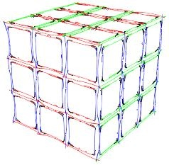

Rubik's Cube by Logic

Olá, este simples site é dedicado àqueles que querem aprender os "segredos" do cubo mágico para resolvê-lo sem decorar seqüências de movimentos (sem algoritmos!). O cubo de Rubik (conhecido no Brasil como cubo mágico), e todos os quebra-cabeças semelhantes, podem ser resolvidos apenas usando o raciocínio lógico, sem qualquer necessidade da "decoreba" de movimentos. Os guias apresentados aqui, como o nome diz, são apenas "guias" para que você encontre seu próprio entendimento e caminhos para a solução desses incríveis quebra-cabeças. Com o entendimento da lógica você sempre poderá resolvê-los de novo, e do seu jeito, mesmo que muito tempo tenha se passado desde a última brincadeira.
Importante: Este site não é dedicado à "cubo-velocidade" (solução rápida de cubos), também conhecida como speedcubing. Também não faz distinção da opção do cubista (cuber) sobre a maneira de resolver. Decorar os algoritmos e resolver rapidamente (em alguns segundos) é simplesmente incrível! Se esse é seu interesse esse site pode ser útil, pois entender as "leis" do cubo e seu funcionamento irão ajudar você no processo de decorar.